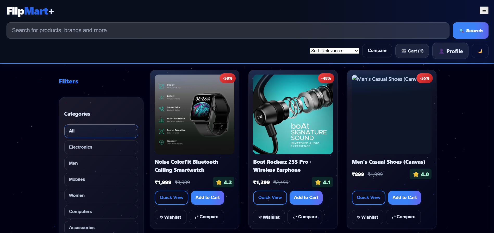
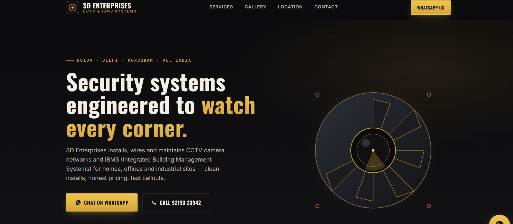

FLIPMART+ / E-COMMERCE
SHOP · COMPARE · DISCOVER
E-commerce website · HTML, CSS & JavaScript
Portfolio 2026 ✦ Web Developer
Hello, I am
A curious web developer shaping practical digital experiences through clean code, thoughtful interfaces and big ideas.
↓HTML / CSS / JS
PYTHON / WORDPRESS
01 / ABOUT
I'm Dipak Kumar Maurya, a web developer with a Diploma in Computer Science Engineering. I work with HTML, CSS, JavaScript, Python and WordPress to create reliable digital solutions.
02 / PROJECT WORK

SHOP · COMPARE · DISCOVER
E-commerce website · HTML, CSS & JavaScript

ENTERPRISES · CCTV & IBMS
CCTV & IBMS Systems · Responsive Website
How can I help?
Python · Eel · HTML, CSS & JavaScript
SCAN · ANALYSE · SECURE
Fast website vulnerability scanner
NEW DELHI · CLEAR SKY
Python · Real-time weather information
03 / TOOLKIT
Responsive, refined front-end experiences
Interactive interfaces and browser logic
Automation, applications and computer vision
Flexible sites and practical productivity tools
04 / MILESTONE
JUNE — JULY 2025
Softpro India Computer Technologies Pvt. Ltd. · Grade A